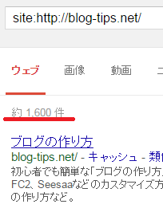
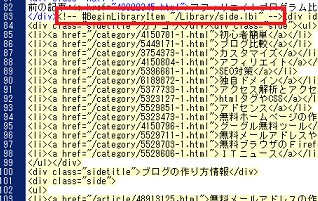

ブログのサイドバーを一括置換しました。
当ドメインのサイドバーを大量に更新する必要が出てきたため、ドリームウィーバーのライブラリー機能と置換機能を使って修正してみました。
少しぐらいのページ数なら手動で更新してもいいのですが、当ドメインのインデックス数を調べてみますと「1,600件」ほどあるようなのです。

ページ数にすると、おそらくは700～1000ページぐらいあるかと思うのですが、これらのページは何年も前の古い情報のままで残っているものばかりですので、来年は１年ぐらいかけてコンテンツの修正をしていこうと考えております。
それぞれのページがある程度の年月の経過しているものですし、内部リンク数も1000ページはあるかと思いますので、既存ページを修正してコンテンツを充実させていった方が検索エンジンではヒットしやすいのではないかという気がしております。
そこで、以前に購入したドリームウィーバーを使って、とりあえずはサイドバーの箇所の一括変換をしてみました。
この手順は以下のような方法で対応できます。
①適当なページでサイドバーの箇所をライブラリーに指定する。
②挿入されたライブラリーの「開始タグ」と「終了タグ」を確認する
③ライブラリーの開始タグを一括置換で全ページに挿入する
④同じく終了タグも一括置換で全ページに挿入する
⑤ライブラリーを更新することで全ページが更新される
⑥アップロードして終了
このようにすることで、全ページを一括で修正することができるはずです。
当ドメインの例でいいますと、サイドバーの箇所には<div id="links">が指定されており、このタグはそのページでひとつしか出てきませんので、その箇所に合わせてライブラリーの開始タグを一括置換で挿入しました。

置換前の箇所に、<div id="links">を指定し、置換後のタグに、<ライブラリータグ><div id="links">を指定して一括置換すればよいと思います。
ライブラリーの終了タグについては、<div id="footer">のタグもそのページでひとつしか出てこないため、ここに合わせて全ページに挿入しております。
ポイントは、各ページで１か所しか出現しないID属性のタグの前後で置換するという点になるかもしれません。
class要素は同じページ内で何度も出てくることもあり、classに合わせて置換するとめちゃくちゃになってしまう可能性もありますので、ID属性の前後に挿入するのがベストかと思います。
もし、サイドバーの箇所などを大量に修正する必要が出てきた際には、ドリームウィーバーのライブラリーと置換機能を使うと便利です。